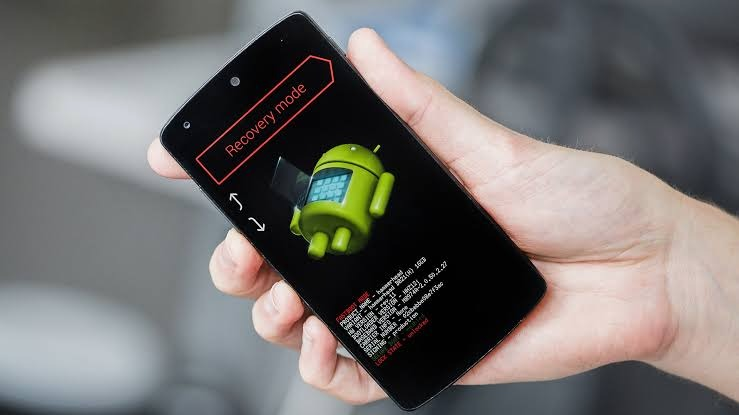

എന്താണ് Android Custom Rom?
കസ്റ്റം റോം ഇൻസ്റ്റാൾ ചെയ്യുന്നത് കൊണ്ടുള്ള ഗുണ-ദോഷങ്ങൾ എന്തൊക്കെയാണ്?
എങ്ങനെ സേഫ് ആയി കസ്റ്റം റോം ഇൻസ്റ്റാൾ ചെയ്യാം?
.
ആൻഡ്രോയ്ഡ് എന്ന ഓപ്പറേറ്റിംഗ് സിസ്റ്റം open source ആയതിനാൽ ഓരോ മനുഫാക്ചേഴ്സും UI ൽ അവരുടേതായ മാറ്റങ്ങൾ വരുത്തിയാണ് നമുക്ക് തരുന്നത് ( redmi യുടെ miui, realme യുടെ color os, vivo യുടെ funtouch, samsung ന്റെ one ui.... അങ്ങനെ)
ഗൂഗിളിന്റെ pixel പോലുള്ള ഫോണുകളിൽ ഇങ്ങനെ മാറ്റമൊന്നും വരുത്താത്ത stock ആൻഡ്രോയ്ഡ് ആണുള്ളത്.
.
ആൻഡ്രോയ്ഡ് 10 തന്നെയുള്ള റെഡ്മി ഫോണിന്റെ സെറ്റിങ്സും ലുക്കും ആയിരിക്കില്ലല്ലോ അതേ ആൻഡ്രോയ്ഡ് വേർഷൻ ഉള്ള സാംസങ് ഫോണിൽ.
Dialer, Phone, Camera, Calender, Clock, Locks മുതലായ സിസ്റ്റം ആപ്പുകൾക്കും വ്യത്യാസം ഉണ്ടാവും.
മാത്രമല്ല അവരുടെ കൊറേ ആപ്പുകൾ pre installed ഉം ആയിരിക്കും. ഇവയിൽ പലതും നമുക്ക് uninstall ചെയ്യാൻ പോലും കഴിയാറില്ല.
.
എന്നാൽ oneplus പോലുള്ള ഫോണുകളിൽ അവരുടെ os (oxygen os) ന് stock ആൻഡ്രോയ്ഡ് നോട് ഏറെക്കുറെ സാമ്യം ഉള്ളത് ആയതിനാലാണ് ആരാധകർ കൂടുതൽ.
.
ഇതുകൊണ്ട് ഒക്കെയാണ് മിക്കവരും miui, color os ഒക്കെ കളഞ്ഞിട്ട് custom rom ചെയ്ത് stock ആൻഡ്രോയ്ഡ് ലുക്കുള്ള Corvus, Havoc, Pixelexperience പോലുള്ള Custom Roms ഒക്കെ ഇൻസ്റ്റാൾ ചെയ്യുന്നത്.
.
ബ്ലോട്ട്വെയറുകൾ (pre installed apps) ഇല്ലാത്തതു കൊണ്ടും pure ആയതുകൊണ്ടും ഇത്തരം റോമുകൾക്ക് smoothness ഉം വേഗതയും താരതമ്യേന കൂടുതൽ ആയിരിക്കും. മാത്രമല്ല കസ്റ്റം റോം ഇൻസ്റ്റാൾ ചെയ്യാൻ ഫോൺ റൂട്ട് ചെയ്യേണ്ട ആവശ്യം ഇല്ലാത്തതിനാൽ ബാങ്കിങ് ആപ്പുകൾ ഒക്കെ യാതൊരു സെക്യൂരിറ്റി പ്രശ്നങ്ങളും ഇല്ലാതെ ഉപയോഗിക്കാം. കസ്റ്റം റോമുകളുടെ മറ്റൊരു സവിശേഷത അവയിൽ ലഭ്യമായ കസ്റ്റമൈസേഷൻസ് ആണ്. തീമും ലുക്കും അടക്കം ഏറെക്കുറെ എല്ലാം തന്നെ നമ്മുടെ ഇഷ്ടത്തിന് അനുസരിച്ച് കസ്റ്റമൈസ് ചെയ്യാനുള്ള സ്വാതന്ത്യം ഇവ നമുക്ക് തരുന്നുണ്ട്.
.
ഇനി എങ്ങനെയാണ് കസ്റ്റം റോം ഇൻസ്റ്റാൾ ചെയ്യുക എന്നു നോക്കാം.
പ്രധാനമായും 3 സ്റ്റെപ്പുകൾ ആണ് ഇതിനുള്ളത്...
.
1. Unlocking bootloader
• ബൂട്ട് ലോഡർ എന്നു പറയുന്നത്, ഒരു ഫോൺ on ആയി വരുമ്പോൾ അതിൽ ഏതൊക്കെ പ്രോഗ്രാംസ് load ആവണം എന്നൊക്കെ അതിന്റെ സിസ്റ്റത്തിന് നിർദ്ദേശം നൽകുന്ന code ആണ്. ഇത് unlock ചെയ്യാതെ നമുക്ക് custom rom ഇൻസ്റ്റാൾ ചെയ്യാൻ കഴിയില്ല.
• Bootloader unlock ചെയ്യുമ്പോൾ ഫോണിലെ datas എല്ലാം പോയേക്കും. അതിനാൽ ഈ step ന് മുന്നേ അവശ്യമായവ എല്ലാം backup എടുത്തു വെക്കുക.
• ഇന്ത്യയിൽ റെഡ്മി, വൺ പ്ലസ് ഒഴികെയുള്ള ഫോണുകളിൽ ബൂട്ട് ലോഡർ unlock ചെയ്ത് custom rom ഇൻസ്റ്റാൾ ചെയ്യുമ്പോൾ വാറന്റി നഷ്ടമാകും.
• ഓരോ ഫോണിനും ഓരോ വിധത്തിൽ ആണ് ചെയ്യുന്നത്. നിങ്ങളുടെ ഫോണിൽ എങ്ങനെയാണ് ബൂട്ട് ലോഡർ unlock ചെയ്യുക എന്ന് യൂട്യൂബ് നോക്കി മനസ്സിലാക്കുക. PC ആവശ്യമാണ്.
.
2. Installing Custom Recovery
• സ്വിച്ച് ഓഫായിരിക്കുമ്പോൾ റെഡ്മി ഫോണിന്റെയൊക്കെ volume up + power button ഒരുമിച്ച് ഞെക്കി പിടിച്ചാൽ ഒരു മെനു വരില്ലേ...ഇതിനെ റിക്കവറി മോഡ് എന്നാണ് പറയുന്നത്. ലോക്ക് ആയ ഫോൺ reset ചെയ്യാനും data wipe ചെയ്യാനും ഒക്കെ ഈ മോഡിൽ പറ്റും. ഇതിനേക്കാൾ കുറച്ചു കൂടി ഫീച്ചറുകൾ ഉള്ള ഒരു 3rd party റിക്കവറി environment (ആപ്പ് പോലെ) നെയാണ് കസ്റ്റം റിക്കവറി എന്നു പറയുന്നത്. നിലവിൽ ഉള്ള rom കളഞ്ഞ് പുതിയത് ഇൻസ്റ്റാൾ (flash) ചെയ്യുന്നത് ഇതിലൂടെയാണ്.
• TWRP (Team Win Recovery Project), Orange Fox ഒക്കെയാണ് പ്രധാന റിക്കവറി പ്രോജക്ടുകൾ. ഇവ .img എന്ന ഫോർമാറ്റിൽ ആണ് ഉള്ളത്.
• കസ്റ്റം റിക്കവറി ഇൻസ്റ്റാൾ ചെയ്യുന്നതിനും PC ആവശ്യമാണ്. നിങ്ങളുടെ ഫോണിൽ എങ്ങനെയാണ് കസ്റ്റം റിക്കവറി ഇൻസ്റ്റാൾ ചെയ്യുക എന്ന് യൂട്യൂബ് നോക്കി മനസ്സിലാക്കുക.
.
3. Installing ROM
• കൂട്ടത്തിൽ ഏറ്റവും എളുപ്പം ആയതും PC ആവശ്യം ഇല്ലാത്തതുമായ സ്റ്റെപ്പ് ഇതാണ്.
• ഫോണിന്റെ റിക്കവറി മോഡിൽ എത്തി, system, data, cache ഒക്കെ wipe ചെയ്തതിനു ശേഷം ഡൌൺലോഡ് ചെയ്തു വെച്ച ROM ഫയൽ sdcard ൽ നിന്നും സെലക്ട് ചെയ്ത് install (flash) ചെയ്യുകയെ വേണ്ടൂ.
• ഒരു തവണ ബൂട്ട് ലോഡർ unlock ചെയ്ത് കസ്റ്റം റിക്കവറി ഇൻസ്റ്റാൾ ചെയ്താൽ പിന്നീട് അത് ഉപയോഗിച്ച് നമുക്ക് എപ്പോൾ വേണമെങ്കിലും roms change ചെയ്യാവുന്നതാണ്. യൂട്യൂബിൽ ട്യൂട്ടോറിയൽസ് ലഭ്യമാണ്.
.
ഒരു ഏകദേശ ധാരണ കിട്ടിക്കാണും എന്നു പ്രതീക്ഷിക്കുന്നു. യൂട്യൂബ് ആണ് നമ്മുടെ ടീച്ചർ.
.
ഇനി കസ്റ്റം റോമിന്റെ കുറച്ചു pros & cons മെൻഷൻ ചെയ്യാം...
ഗുണങ്ങൾ:
New ui
Smooth performance
Cool animations
Latest version of android
Various online themes
Icons packs
New audio drivers
The bugs are solved by the developers
Customisable
Good memory management
Long lasting battery
Gaming performance may improve
You can apply tweaks
ദോഷങ്ങൾ:
ഇൻസ്റ്റാൾ ചെയ്യുന്നത് എങ്ങനെയെന്ന് നല്ലപോലെ മനസ്സിലാക്കി മാത്രം ചെയ്യുക. പിഴവുകൾ വന്നാൽ phone brick / bootloop ആയേക്കാം. ബൂട്ലൂപ്പ് (ഓൺ ആക്കുമ്പോൾ കമ്പനി ലോഗോയിൽ സ്റ്റക്ക് ആവുന്ന അവസ്ഥ) ആയാൽ നമുക്ക് പരിഹരിക്കാവുന്നതെ ഉള്ളൂ, brick ആവാനുള്ള (ഫോൺ dead ആവുക) സാധ്യത വളരെ കുറവാണ്.
Miui പോലുള്ള റോമുകൾ തരുന്ന clone apps പോലുള്ള ഫീച്ചറുകൾ by default കിട്ടിയേക്കില്ല.
റെഡ്മി, one പ്ലസ് ഒഴികെ ഫോണുകളിൽ വാറന്റി നഷ്ടമാവും.
.
PS: ഞാൻ എന്റെ Redmi Note 8 ഫോണിൽ Havoc OS ആണ് ഉപയോഗിക്കുന്നത്. ഓരോ റോമിനും ടെലിഗ്രാമിൽ അവരുടെ സപ്പോർട്ടിങ് ഗ്രൂപ്പുകൾ ഉണ്ട്. റോം ആയി ബന്ധപ്പെട്ട പുതിയ updations ഒക്കെ അവിടെ ലഭിക്കും.
.
NB: പ്രധാനപ്പെട്ട കാര്യങ്ങൾ മാത്രമാണ് മെൻഷൻ ചെയ്തത്... substeps ഒഴിവാക്കിയിട്ടുണ്ട്. സ്വന്തം റിസ്കിൽ മാത്രം ചെയ്യുക.
ഓപ്പോ, വിവോ ഫോണുകളിൽ bootloader unlocking സപ്പോർട്ട് ചെയ്യാത്തതിനാൽ custom roms installation സാധ്യമല്ല.
കസ്റ്റം റോം ഇൻസ്റ്റാൾ ചെയ്യുന്നതിൽ എന്തെങ്കിലും സംശയം ഉണ്ടെങ്കിൽ @RomGuide (Malayalam) എന്ന ടെലഗ്രാം ഗ്രൂപ്പിൽ ചോദിക്കാവുന്നതാണ്.
ഹാപ്പി to ഹെല്പ്.
-DeOn-